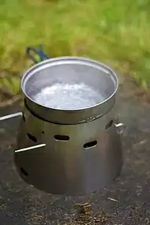

Abkochen

Abkochen von Wasser ist das Erhitzen auf den Siedepunkt (Kochen), um Keime und Mikroorganismen, also Bakterien, Pilze, Algen und andere abzutöten. Durch das Abkochen werden fast alle Mikroorganismen abgetötet, Ausnahmen stellen besondere Bakterien und Viren dar, die bei 100 °C überlebensfähig sind, und solche, die Sporen bilden.
Das Wasser sollte mindestens 3 Minuten sprudelnd kochen.[1] In höheren Lagen muss das Wasser noch länger gekocht werden, da das Wasser bei niedrigerem Luftdruck einen niedrigeren Siedepunkt hat, als Richtwert gilt: 1 Minute länger je 150 Höhenmetern.[2]
Um einen bestmöglichen Schutz vor Krankheiten zu erreichen, sollte Wasser, das man seiner Umwelt entnimmt, abgekocht werden. Speziell in Seen, Flüssen, Bächen und auch in offenen Brunnen lebt eine Vielzahl von Mikroorganismen, von denen einige Krankheiten verursachen können.
Durch das Abkochen wird auch die sogenannte Wasserhärte, die zum Beispiel für Seifenmehrverbrauch („Kalkseife“) verantwortlich ist, herabgesetzt auf das Maß der permanenten Wasserhärte.
Einzelnachweise
- ↑ Trinkwasser – Wasser für den menschlichen Gebrauch. (PDF) 27. März 2003, abgerufen am 3. Dezember 2014.
- ↑ Sauberes Trinkwasser im Ausland. (PDF) Auswärtiges Amt – Gesundheitsdienst, 19. März 2018, abgerufen am 19. März 2018.
- Vorbereitungsverfahren der Speisenherstellung
- Wasseraufbereitung